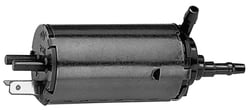

-
I just replaced the front wiper washer motor on my 86 Z with a Trico 11-500 from Oreilly's. Sorry I do not have a lot of pictures but wanted to put this out there in case someone else had the issue. It hooked up perfectly and the only issue is it did not have a mount on it. I removed the old one from the tank and connected the hoses and power connections and it works great. I just placed it on the frame between the bottom of the tank and it will do for now until I take time to permanently attach it. Probably can zip tie the new one to the tank or something like that. Cost was about 20.00.
 1978 280Z - great fun!
1978 280Z - great fun!
1981 280ZX - more fun!!
1986 300ZX NA2T - Lots of fun! -
Saying motor kind of implies like it's the wiper motor not the washer pump, got me confused at first. Otherwise good to know.

Copyright © 2006–. All rights reserved. Privacy Policy